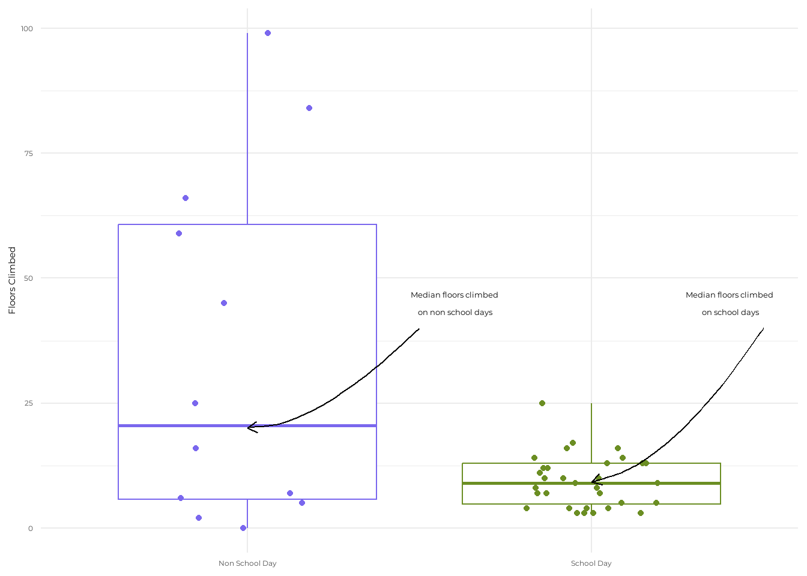

library("tidyverse") # reading in packages
library("here")
library("gt")
library("janitor")
library("readxl")
library("ggplot2")
library("dplyr")
library("lubridate")
library("showtext")
library("cowplot")
library("ggtext")Advanced Data Visualization
Repository Link
Set up
Code for Graphs
personaldata <- read_csv(here("data","personaldatajune3.csv")) # creating an object called "personaldata" from my csv
personaldata_clean <- personaldata |> clean_names() # cleaning up the variable namesBox Plot
showtext_auto() # using showtext in order to access custom fonts
font_add_google(name = "Montserrat", family = "montserrat") # choosing the google font "Montserrat"
ggplot(data = personaldata_clean, # using ggplot and setting data frame
aes(x = school_day, # setting x axis value
y = floors_climbed, # setting y axis value
color = school_day)) + # coloring based on school day
geom_boxplot() + # creating a boxplot
geom_jitter(width = 0.2, height = 0) + # horizontal jitter to prevent overlapping points
labs(x = NULL, # no x axis label
y = "Floors Climbed") + # labeling y axis
theme_minimal(base_family = "montserrat") + # minimal theme and using custom font
theme(legend.position = "none") + # removing legend
geom_curve(x = 1.5, y = 40,
xend = 1, yend = 20.1, # setting location of arrow 1
arrow = grid::arrow(length = unit(0.5, 'lines')), # length of arrow 1
curvature = -0.3, angle = 40, ncp = 3, # arrow 1 shape
color ='black') + # color of arrow 1
draw_label("Median floors climbed \n on non school days", # setting label 1
fontfamily = "montserrat", # choosing font for label 1
x = 1.6, # x axis location of label 1
y = 45, # y axis location of label 1
size = 10, # font size of label 1
color = "black") + # color of label 1
geom_curve(x = 2.5, y = 40,
xend = 2, yend = 9.2, # setting location of arrow 2
arrow = grid::arrow(length = unit(0.5, 'lines')), # length of arrow 2
curvature = -0.3, angle = 40, ncp = 3, # arrow 2 shape
color ='black') + # color of arrow 2
draw_label("Median floors climbed \n on school days", # setting label 2
fontfamily = "montserrat", # choosing font for label 2
x = 2.4, # x axis location of label 2
y = 45, # y axis location of label 2
size = 10, # font size of label 2
color = "black") + # color of label 2
scale_color_manual(values = c(
"Yes" = "olivedrab", # manually setting color for yes value
"No" = "slateblue2" # manually setting color for no value
)) +
scale_x_discrete(labels = c("No" = "Non School Day", "Yes" = "School Day")) # changing x axis labels
Ridgeline Chart
library(ggridges) # reading in ggridges package
showtext_auto() # access custom fonts
font_add_google(name = "Montserrat", family = "montserrat") # using the "Montserrat" font
ggplot(personaldata_clean, aes(x = floors_climbed, y = school_day, fill = school_day)) + # choosing data frame and assigning axis values
geom_density_ridges(scale = 1, alpha = 0.7) + # adding density ridges
labs(x = "Floors Climbed", y = NULL) + # adding axis labels
theme_minimal(base_family = "montserrat") + # adding a minimalist theme
theme(legend.position = "none") + # removing the legend
geom_curve(x = 28, y = 2.5,
xend = 9, yend = 3, # setting location of arrow 1
arrow = grid::arrow(length = unit(0.5, 'lines')), # length of arrow 1
curvature = -0.3, angle = 100, ncp = 6, # shape of arrow 1
color ='black') + # color of arrow 1
draw_label("A high peak indicates many data \n points are concentrated around \n the corresponding x-value", # setting label 1
fontfamily = "montserrat", # setting font for label 1
x = 53, # x axis location for label 1
y = 2.5, # y axis location for label 1
size = 10, # font size for label 1
color = "black") + # font color for label 1
geom_curve(x = 28, y = 0.75,
xend = 6.5, yend = 1.5, # setting location of arrow 2
arrow = grid::arrow(length = unit(0.5, 'lines')), # length of arrow 2
curvature = -0.3, angle = 100, ncp = 6, # shape of arrow 2
color ='black') + # color of arrow 2
draw_label("This peak is lower because the \n data points have a wider distribution", # setting label 2
fontfamily = "montserrat", # setting font for label 2
x = 55, # x axis location for label 2
y = 0.75, # y axis location for label 2
size = 10, # font size for label 2
color = "black") + # color of font for label 2
scale_fill_manual(values = c(
"Yes" = "olivedrab", # manually setting color for yes value
"No" = "slateblue2")) + # manually setting color for no value
scale_y_discrete(labels = c("No" = "Non School Day", "Yes" = "School Day")) # changing y axis labelsStacked Area Chart
showtext_auto() # access custom fonts
font_add_google(name = "Montserrat", family = "montserrat") # using the "Montserrat" font
personaldatasummary <- personaldata_clean |> # choosing data frame and summarizing
group_by(school_day, date) |> # grouping by select variables
summarize(daily_floors = sum(floors_climbed, na.rm = TRUE), .groups = "drop") |> # summarizing daily floors climbed
arrange(date) |> # arranging by date
group_by(school_day) |> # grouping by school day
mutate(cumulative_floors = cumsum(daily_floors)) # taking the cumulative sum of daily floors climbed
label_data <- personaldatasummary |> # labeling data
group_by(school_day) |> # grouping by school day (yes or no)
slice_max(order_by = date, n = 1) # selecting rows with the largest values of a variable
personaldatasummary <- personaldatasummary %>%
mutate(school_day = recode(school_day, # using mutate to relabel the values for the school day column
"Yes" = "School Day", # changing "Yes" to "School Day"
"No" = "Non School Day")) # changing "No" to "Non School Day"
label_data <- label_data %>%
mutate(school_day = recode(school_day, # labeling data with new values
"Yes" = "School Day",
"No" = "Non School Day"))
ggplot(personaldatasummary, aes(x = date, y = cumulative_floors, fill = school_day)) + # using ggplot and assigning values
geom_area(alpha = 0.8) + # stacked area chart
geom_text( # adding labels to plot
data = label_data, # labeling data
aes(x = date, y = cumulative_floors, label = school_day), # assigning values
hjust = -0.1, # horizontal orientation
vjust = 0.5, # vertical orientation
size = 4, # choosing font size
color = "black", # black labels
family = "montserrat", # font family
inherit.aes = FALSE # overriding default aesthetics
) +
labs( # labels
title = "Cumulative Floors Climbed by School Day", # adding title
x = "Date", # labeling x axis
y = "Cumulative Floors" # labeling y axis
) +
theme_minimal(base_family = "montserrat") + # adding a minimalist theme
theme(legend.position = "none") + # removing legend
expand_limits(x = max(personaldatasummary$date) + 5) + # expand x axis to display chart labels
geom_curve(x = as.Date("2025-05-15"), y = 600,
xend = as.Date("2025-05-25"), yend = 500, # choosing location of arrow
arrow = grid::arrow(length = unit(0.5, 'lines')), # length of arrow
curvature = -0.3, angle = 100, ncp = 6, # shape of arrow
color ='black') + # color of arrow
draw_label("Despite only accounting for 2 days out of the \n week, the cumulative floors climbed on \n non school days is much higher than on school days", # choosing label
fontfamily = "montserrat", # choosing font for label
x = as.Date("2025-05-05"), # x axis location for label
y = 600, # y axis location for label
size = 10, # font size for label
color = "black") + # font color for label
scale_fill_manual(values = c("School Day" = "olivedrab",
"Non School Day" = "slateblue2")) # manually setting colors based on valuesWrite-Up
- In the first visualization I am highlighting the median number of floors climbed on school days and non school days as a way to represent the data with a measure of central tendency. In the second visualization I am highlighting the distribution of values for floors climbed on school days and non school days in order to see if one distribution is wider than the other. In the third visualization I am highlighting the cumulative number of floors climbed for school days and non school days as a way to examine the difference in the total number of floors climbed between both groups.
- For my infographic I chose a white background to match the white backgrounds of my visualizations, which blends together well. I used the Montserrat font because I think it easy to read. I chose a vertical orientation and alternated the visualizations and text to make a smooth visual.
- I was inspired to use the boxplot through this class. I was inspired to use the ridgeline plot because An suggested this as an option in one of my meetings with her. For the stacked area chart I was inspired by a visualization by the user “z3tt” on GitHub.
- Yes, I cleaned and summarized my data. I ended up using geom_boxplot, geom_jitter, geom_curve, geom_density_ridges, geom_area, and geom_text. For customizations I used geom_curve for annotations and also added a custom font.
- I used Elmera Azadpour’s website for a geom_curve template. I used Google to help learn how to code the visualizations and ChatGPT to help identify errors in my code.